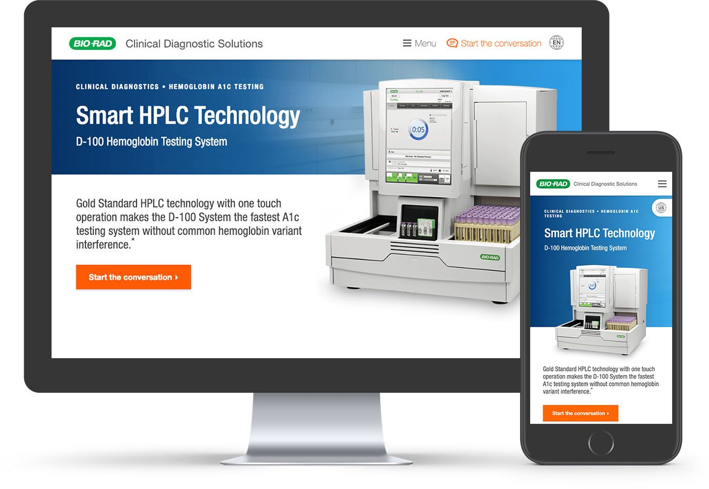

Bio‑Rad Microsite
Website, Mobile, Front-end Development, Iconography

In the past few years, Bio‑Rad began focusing on creating a customer experience beyond just desktop. The Global Marcom team channeled their efforts into building a responsive microsite to showcase their top-selling systems from the Clinical Diagnostics Group (CDG) and Life Sciences Group (LSG).
I work within a web team of three under the MarCom department— the only team to be building this global website. My responsibilities include taking concepts from start to finish, design and implementation, and maintenance of our code library and documentation. Besides the microsite, I also support internal stakeholders to build out landing pages and resource tools.


While the microsite would assume its own brand style, we stayed within the boundaries to make sure that it was easily recognizable with the Bio‑Rad brand. The leading Global MarCom Team adopted the template and are modifying it for company-wide use.
Not all countries/regions will have access to every equipment on the website. To support our users, we created two branches for the website; one for the US and one for outside the US (OUS). A gating system was introduced to redirect users to the right products.

The working taxonomy
I worked closely with the internal copywriter to place the appropriate content on our pages. Once that version is done, we use ProofHQ to share it with the marketing team to get their copy edits. The approved iteration then goes to Regulatory.

Sample ProofHQ version
Our code is built locally and then hosted on Marketo where logic is linked up to track engagement from users. There are technical limitations working within Marketo due to their poor development environment. To combat this, our microsite was developed with a few hacks to overwrite some of Marketo's baked-in functions.


Design and develop a microsite for a company that has not incorporated modern trends in user experience
Spoke to Marketing and Regulatory to determine copy and content structure
Made edits to copy and collaborated using ProofHQ
Worked on bug fixes and upkeep of CSS
Introduced new ideas into layout and design guide
Built website and launched internally
Tested microsite on major browsers (desktop and mobile)
The microsite was launched in early February and received positive remarks from various departments. This was a huge milestone as it allowed product managers to finally have a responsive resource to show their customers. It was also a statement to customers to indicate that the company is now pushing towards a more convenient experience for their audience.
One of the biggest challenges for this project is the slow moving process and constant iteration involving several tiers of approval. The process was improving in the midst of implementation but we had buy-in from the upper level of executives to get all the resources we needed.